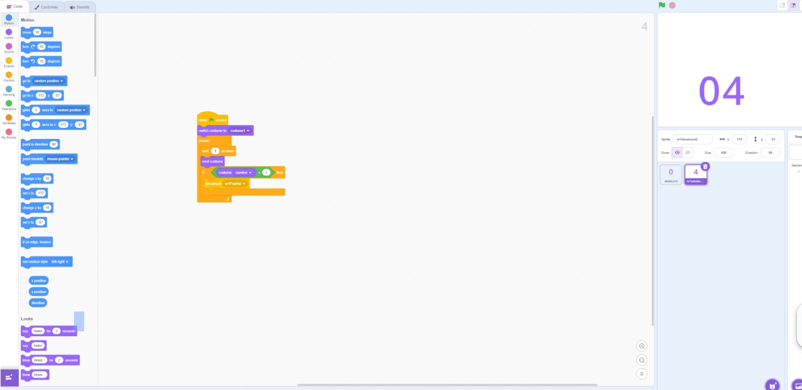
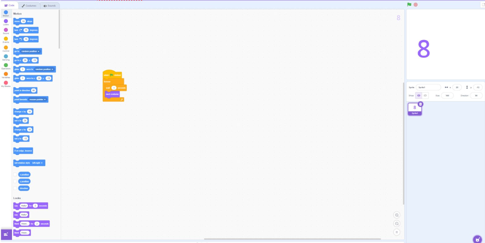
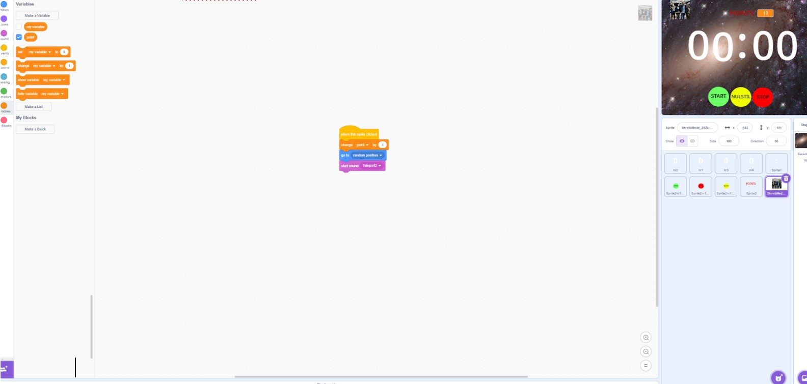

Forgrening (inkl. screenshot):

Løkke (inkl. screenshot):

Variabler (inkl. screenshot):

HTTP and HTML
URL:
Adressen på en webside.
HTTP:
HTTP (Hypertext Transfer Protocol) er en protokol, der bruges til at overføre data mellem en webbrowser og en webserver. Det bruges til at hente websider, sende formularer.
HTML:
HTML er sproget, der bruges til at lave hjemmesider. Det består af forskellige koder (tags), der bestemmer, hvordan tekst, billeder og links skal vises i en browser.
GET-request:
En GET-request er en HTTP-forespørgsel, der bruges til at hente data fra en server. Når du f.eks. indtaster en webadresse i din browser, sender den en GET-request for at hente siden. Dataen sendes i URL’en, og der ændres ikke noget på serveren.
POST-requests:
En POST-request er en HTTP-forespørgsel, der bruges til at sende data til en server, f.eks. når du udfylder en formular. Dataen sendes i selve forespørgslen (ikke i URL’en), og det kan bruges til at oprette eller ændre indhold på serveren.
Cookie:
En cookie er en lille tekstfil, som en hjemmeside gemmer i din browser for at huske oplysninger om dig, f.eks. login-status, præferencer eller indkøbskurv.
Secure Sockets Layer (SSL) og Transport Layer Security (TLS):
SSL (Secure Sockets Layer) og TLS (Transport Layer Security) er sikkerhedsprotokoller, der krypterer data mellem en browser og en server for at beskytte information mod hackere. TLS er den nyere og mere sikre version af SSL.
Digital Certificate:
Et digitalt certifikat er en elektronisk identitet, der bekræfter ejerskabet af en hjemmeside og sikrer sikker kommunikation via kryptering (SSL/TLS). Det udstedes af en certifikatautoritet.
Kodningsværktøjer
Editor:
En editor i programmering er et værktøj, hvor du skriver og redigerer kildekode. Den tilbyder funktioner som syntax-highlighting, autofuldførelse og fejlmarkering for at gøre kodningen lettere.
Compiler:
En compiler er et program, der oversætter kildekode skrevet i et højniveau-programmeringssprog (f.eks. C, Java) til maskinkode eller et lavere niveau, som en computer kan udføre. Kompilereren omdanner hele programmet ad gangen, hvilket gør det hurtigt at køre, når det først er kompileret.
TextEdit (Mac):
En simpel teksteditor til Mac, der kan bruges til at skrive og redigere tekstfiler som .txt eller .html.
Notepad (PC):
En grundlæggende teksteditor på Windows, der kan bruges til at skrive og redigere tekstfiler (.txt), HTML eller kodefiler.
.txt/.htm/.css:
- .txt: En simpel tekstfil uden formatering.
- .htm/.html: Filformater til webdokumenter, der indeholder HTML-kode.
- Tredje punkt
Webbrowser:
En applikation, som bruges til at vise webindhold, herunder HTML, CSS og JavaScript. Eksempler er Chrome, Firefox og Safari.
Html
Hvad er html?
HTML (HyperText Markup Language), der bruges til at strukturere og formatere indhold på internettet. HTML definerer, hvordan tekst, billeder, links og andre elementer vises på en webside.
Hvilke elementer finder man i et html dokument?
Når du trykker F12 i de fleste browsere, åbnes Developer Tools (udviklerværktøjer), hvor du kan se HTML-koden og CSS-styling for denne side.
Hvad er html tags (brug eksempler)?
<html>
<body>
osv.
CSS
Hvad er CSS?
CSS (Cascading Style Sheets) bruges til at style og designe HTML-elementer, som farver, skrifttyper og layout.
Hvordan bruger man CSS sammen med HTML (nævn tre måder at integrere CSS med HTML)?
Jeg havde problemer, når jeg laver koden bliver den forbundet til hjemmesiden :(
JavaScript
Hvad er JavaScript og hvad bruges det til?
JavaScript er et programmeringssprog, der bruges til at gøre hjemmesider interaktive, f.eks. med animationer, dynamisk indhold og brugervenlige funktioner.
Hvordan integreres JavaScript med HTML?
JavaScript integreres med HTML ved at placere scripts inde i <script>-tags, enten direkte i HTML-filen eller ved at linke til en ekstern fil.
<script>
alert("Hej Bruger!");
</script>